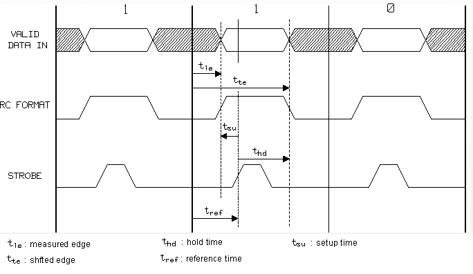
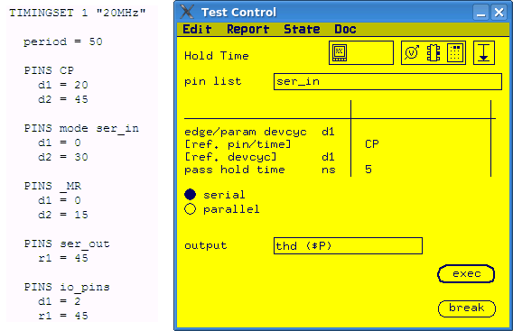

Hold Time test function conversion
The Hold Time test can be pass/fail test or value test.
About this task
For pass/fail test, you can convert it to an
ac_tml.AcTest.functionalTest by changing the right neighbor drive edge of the
measured edge to the position of reference time plus pass hold time.
For value test, you
can convert it to an ac_tml.AcTest.parametricFunctionalTest test method.
Firstly, you need to define a timing spec to control the right neighbor drive edge of the
measured edge. Then in the ac_tml.AcTest.parametricFunctionalTest test method,
you can use the spec as the parameter to shift
In value test, the Hold Time test function tries to find the minimum time that the input signal must remain stable after a reference signal is issued to the DUT. It moves the right neighbor drive edge (shifted edge) of the measured edge to find the pass/fail or fail/pass transition of the functional test. The definition of hold time is shown in the figure below.

Procedure
Example
The following example shows how to convert a Hold Time value test to
ac_tml.AcTest.parametricFunctionalTest. The timing set used in the example is
listed on the left side.

In this example, a serial hold time measurement is done for drive edge d1 of pin group ser_in. The reference time is edge d1 of pin CP. If the measured hold time is less than 5 ns, the measurement is pass.
To convert this measurement to the
ac_tml.AcTest.parametricFunctionalTest, you need to:
- Define a timing spec hold_time to control the trailing edge
d2:
PINS ser_in d1 = 0 d2 = hold_time + 20
- The search range of d2 is from d1 to
d1 plus one period because no drive edge exists between
d2 and the end of the period.
In this example, period = 50 ns and d1 = 0. So the search range of d2 is from 0 ns to 50 n.
hold_time=d2-reference time. So the search range of hold_time is from -20 ns to 30 ns.
- Enter the parameter values for ac_tml.AcTest.parametricFunctionalTest.
spec
hold_time
resultPinList
ser_in
resultPinListMode
serial
setupPinList
ser_in
setupPinListMode
serial
method
lin/bin
start
-20
stop
30
step
resolution
passMin
passMax
5
Functional changes
- Introduced before SmarTest 6.3.2